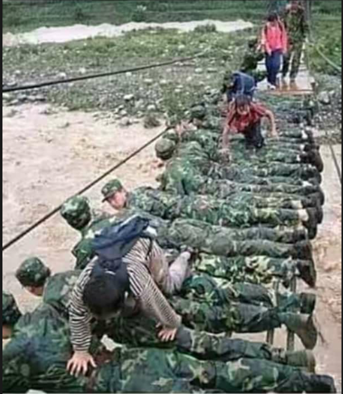
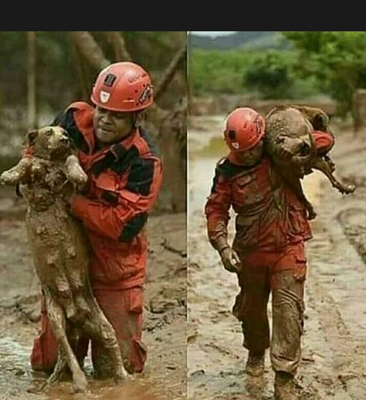
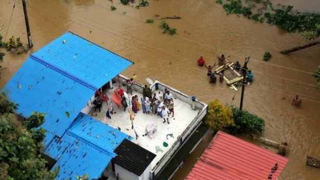

India's armed services are stepping up efforts to rescue thousands of people stranded by flooding in southern Kerala state that has killed 324 people.
Hundreds of troops, and dozens of boats and helicopters are helping to evacuate people from what officials say is the worst flooding there in a century.
Many people are still believed to be trapped on rooftops of flooded homes.


People who are stuck without electricity and supplies have been resorting to social media to appeal for help and say they have been unable to contact rescue services.

The volunteers who become a helping hand for kerala.